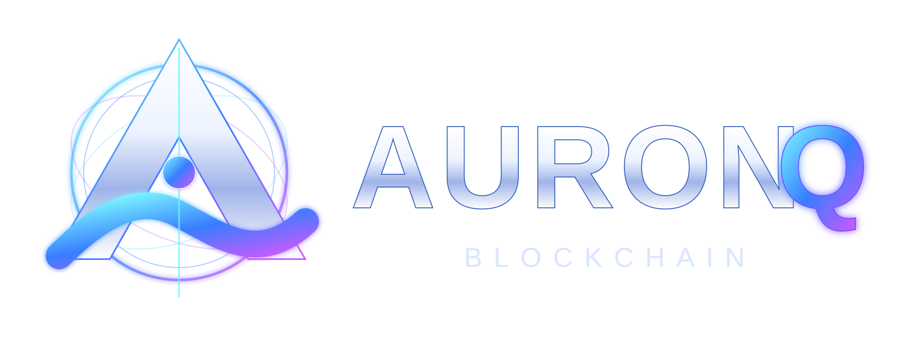

AURQ Mainnet • Open Source • Proof-of-Work
AuronQ (AURQ) — open-source Proof-of-Work cryptocurrency
AuronQ is a public UTXO Proof-of-Work cryptocurrency written in Go, built around independent full-node validation, AQM64 mining and standardized ML-DSA-87 transaction signatures.
You can run the full node yourself, mine with the official Universal Miner on CPU or validated CUDA/OpenCL GPU hardware, inspect the chain through your own local Explorer and verify the software on GitHub.
ML-DSA-87 transaction signaturesAuronQ transactions use the standardized post-quantum ML-DSA-87 signature scheme.
AQM64 Proof-of-WorkAuronQ-specific compute-and-memory Proof-of-Work with cumulative-work chain selection.
Independent full nodesEvery full node validates blocks, transactions, signatures, timestamps, difficulty and chain work locally.
No canonical ExplorerEach full node can serve its own Explorer directly from its independently validated chain.
Mine AURQ
AURQ can be mined solo or through independently operated third-party pools. External pools and miners are not part of AuronQ consensus.
RPlantIndependent AURQ mining pool and connection page.Open RPlant →
MeshMiner 0.8.35Third-party AURQ miner with published CPU and NVIDIA GPU support.View MeshMiner →
AuronQ Universal Miner v0.4.6 AlphaOfficial AUTO miner with primary CUDA, legacy CUDA for supported older NVIDIA GPUs, OpenCL GPU fallback for AMD/Intel/NVIDIA, and native CPU fallback.Downloads → ·
Guide →
Before using a third-party pool or miner, verify its current fees, payout policy, binaries and connection parameters with the operator.
Third-party network/mining trackers: MiningChamp AuronQ profile · MiningChamp pools · MiningChamp coins · CPU-Mining.info
Verify the network yourself
AuronQ is easier to evaluate through public code and observable network data than through marketing claims.
Source & releasesRead the implementation, release history and checksums directly on GitHub.Open GitHub →
Public ExplorerInspect blocks, transactions, supply and chain state from a public full-node Explorer.Open Explorer →
Protocol documentationReview the consensus rules and AQM64 construction instead of relying on summaries.Protocol → ·
AQM64 →
Why AuronQ?
AuronQ is not presented as a finished replacement for established cryptocurrencies. It is an open engineering project exploring a different combination of Proof-of-Work, post-quantum transaction signatures and full-node-first validation.
Verify instead of trustFull nodes decide validity from protocol rules, not from a website, founder server or public Explorer.
Replaceable discoveryBootstrap endpoints are startup hints, not consensus authorities. Learned peers are persisted and gossiped through the P2P network.
Public engineeringSource code, protocol documentation, releases, tests, bug reports and fixes are developed in the open.
Built to be testedThe project includes partition/reorg tests, fuzzing, race-detector CI, reproducible-build checks and network health monitoring.
Try the network
The fastest way to understand AuronQ is to run it. No account registration is required to operate a full node.
Download
Get the current Windows or Linux full-node package from GitHub Releases and verify its SHA-256 checksum.
Latest release →Run a full node
On Windows, extract the whole archive and start START-AURONQ.cmd. The node discovers peers and synchronizes the chain.
Windows guide →Create a wallet / mine
Create or import a wallet, back it up, then use the Universal Miner in AUTO mode for validated primary CUDA→legacy CUDA→OpenCL→CPU selection.
Mining guide →
Current network software
Desktop / Full Node v1.7.13 Mainnet
Universal Miner v0.4.6 Alpha
AuronQ Mobile 0.5.3 Alpha
Windows x64 and Linux amd64 full-node packages are available now. Universal Miner v0.4.6 Alpha adds validated primary CUDA→legacy CUDA→OpenCL GPU→CPU fallback; Pascal/GTX 10xx-class NVIDIA cards can use the packaged CUDA 12.6 legacy path when the device self-test passes. Android is a light wallet that independently validates the header/AQM64 chain but does not reconstruct the complete UTXO state locally.
What has already been tested?
20-node convergencePartition, fork, reconnect and restart scenarios are exercised in automated network tests.
Founder-node removalA regression test removes the original bootstrap node permanently and verifies that a fresh node can join through surviving peers.
Mining correctnessMiners cancel stale templates when the canonical tip advances or changes through a reorganization.
Reproducible buildsRelease-style deterministic build checks run for supported desktop targets.
Read the changelog → View the roadmap →
Security status
Young network — independent audit still pending
AuronQ is a young public cryptocurrency network in an early stage of operational maturity. ML-DSA-87 is a standardized post-quantum signature scheme, but that does not make the complete system automatically post-quantum secure or mature financial infrastructure. AQM64 and the full consensus/network implementation have not yet received an independent professional security or cryptographic audit. Until that review is completed and the network has accumulated a longer operating history, do not use AuronQ to store or transfer substantial value.
For developers and reviewers
AuronQ is designed to be inspected. The protocol, PoW design, decentralization model, threat model, test matrix and release history are public.